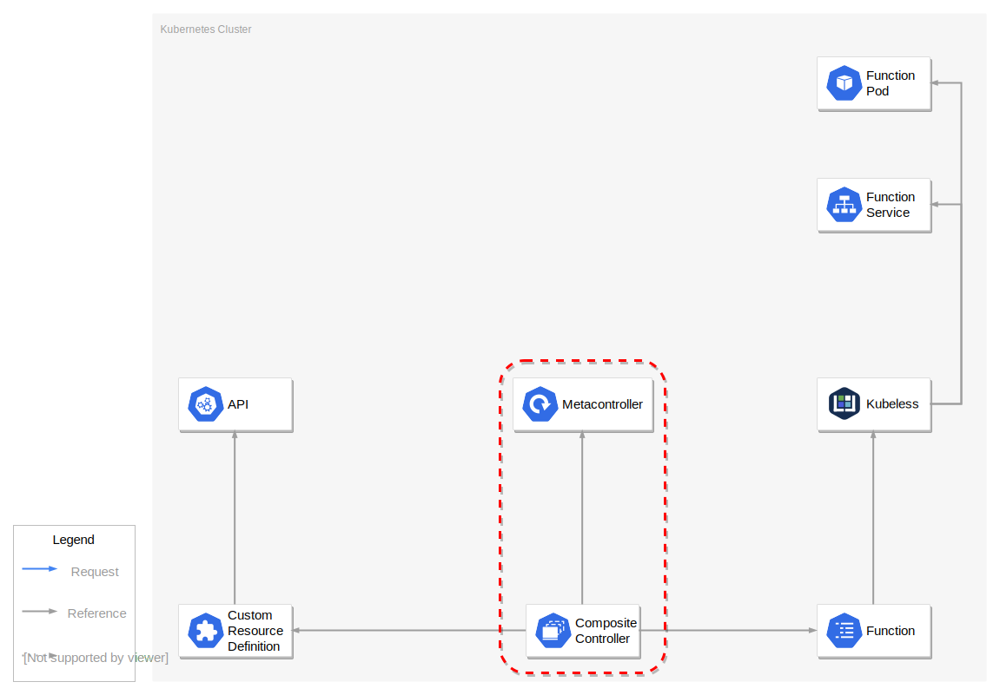

Michael Grüner
Some logic to make it do something
Some API magic to make it all stick together
Metacontroller
(MaaS: Magic as a Service)

Demo
The End
Contact? Well...
Github:
@mgruener
Github:
@bedag
Anyone still using email?
michael.gruener@that.cloud